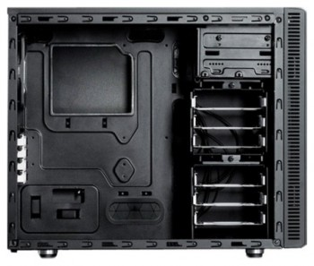
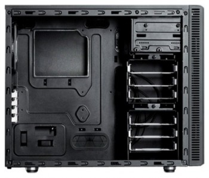

Корпус для ПК Fractal Design Define Mini черный без БП mATX 2×120mm Mini-tower. Является качественным корпусом, подходящим для установки материнских плат Micro ATX, топового процессора с хорошим башенным кулером и одной топовой видеокарты.
Корпус Define Mini создан специально для тех, кому требуется гибкая платформа форм-фактора Micro ATX, где всё пространство задействовано максимально эффективно: идеальный баланс объема и функциональности.За счет того, что Define Mini компактнее обычного Micro ATX-корпуса и его внутреннее пространство оптимизировано, корпус становится идеальной основой для конфигурации. Компоновка внутреннего пространства способствует свободному прохождению воздуха вокруг основных компонентов, обеспечивая хорошее охлаждение и тишину работы системы.Широкая поддержка охлаждения (как воздушного, так и жидкостного) обеспечивает создание мощных систем. Обладая чертами серии Define, корпус Define Mini получил характерный дизайн передней панели, плотный звукопоглощающий материал и верхнюю панель с заглушками ModuVent. Те, кому хочется снять ModuVent и установить дополнительные вентиляторы или радиатор, вместо заглушек могут зафиксировать пылевой фильтр с магнитными креплениями, а встроенный кожух для блока питания обеспечивает непревзойденный уровень укладки кабелей. Специальный дизайн Define Mini обеспечивает создание действительно изящной системы, что отличает продукты Fractal Design.